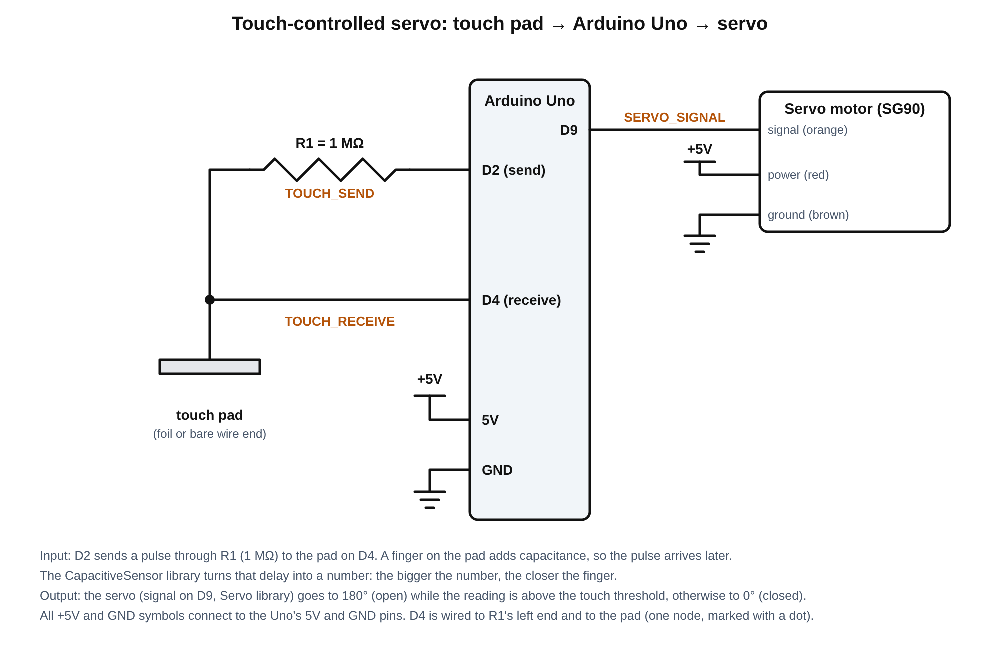
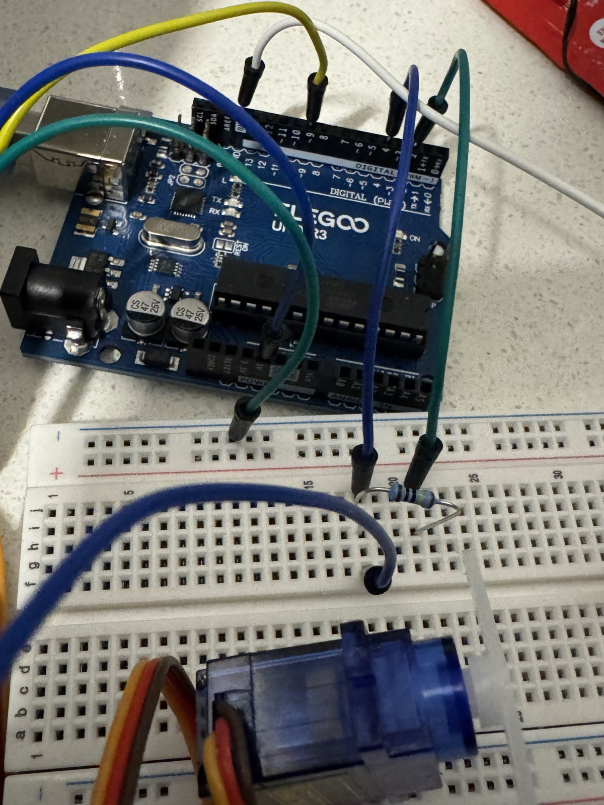
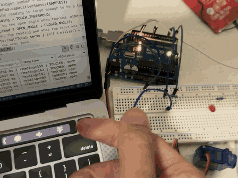

Assignment 4: Touch-Controlled Servo
Touching a foil pad opens a servo; letting go closes it. It uses two libraries: CapacitiveSensor for the touch input and Servo for the output.
1. What it does
Think of a touch-operated blinds control: while a finger is on the pad the blinds (the servo arm) are open, and when I let go they close.
| Input | Output | Behavior |
|---|---|---|
| Touch pad (D2 send, D4 receive, through R1) | Servo (D9) | Reading above TOUCH_THRESHOLD (touched): servo to 180°. Otherwise: servo to 0°. |
How the touch sensor works. The library makes D2 go HIGH and measures how long it takes for D4 to follow through the large resistor R1. The pad and the wires form a tiny capacitor that has to charge first, and a finger near the pad adds capacitance, so charging takes longer. The library returns that charging time as a number: the bigger the number, the closer the finger.
Calibration. There is no analogRead() in this sketch, but the sensor still needs a zero point. The CapacitiveSensor library keeps the smallest value it has measured and subtracts it from every later result, so with nothing touching the pad the reading sits near 0. This is why I keep my fingers off the pad while the Arduino starts. I then set the touch threshold from the numbers I saw in the Serial Monitor (Section 3).
Parts and libraries
- Arduino Uno
- Resistor R1, 1 MΩ (brown-black-green) (input)
- Touch pad: a piece of aluminum foil taped to a jumper wire (input)
- Servo motor (SG90) (output)
- Breadboard and jumper wires
- Libraries: CapacitiveSensor (install it from Library Manager) and Servo (included with the Arduino IDE)
2. Schematic

TOUCH_SEND) goes through R1 (1 MΩ) to the node TOUCH_RECEIVE, which is wired to D4 and to the touch pad. Output on the right: SERVO_SIGNAL from D9 to the servo. Why these values: Section 3. Vector version: SVG.Connection list (matches Figure 1, Figure 2a and the code)
| Net | Connects | Code constant |
|---|---|---|
| +5V | Uno 5V, servo red wire | – |
| GND | Uno GND, servo brown wire | – |
| TOUCH_SEND | Uno D2 ↔ R1 (one end) | SEND_PIN = 2 |
| TOUCH_RECEIVE | R1 (other end) ↔ Uno D4 ↔ touch pad | RECEIVE_PIN = 4 |
| SERVO_SIGNAL | Uno D9 ↔ servo orange wire | SERVO_PIN = 9 |
3. Why I chose these values
Resistor R1 = 1 MΩ
R1 sits between the send pin and the receive pin. The library’s example says the resistor affects sensitivity, that values from about 50 kΩ to 50 MΩ can be tried, and that larger resistor values give larger sensor values (its own example uses 10 MΩ). A larger resistor makes the pad more sensitive but also slower and noisier. I used 1 MΩ, which gave a clear difference between touched and not touched in my test (readings of about 8–11 untouched and 249 touched, Section 6).
Servo and pins
- D2 and D4 are the send and receive pins. The library can use any two digital pins, and these are the pins used in the class demo. Pins 0 and 1 are left free because the Serial Monitor uses them.
- D9 = servo signal. The Servo library makes a 50 Hz pulse train; by default 544 µs means 0° and 2400 µs means 180°. It uses Timer1, which disables
analogWrite()on pins 9 and 10; I use noanalogWrite()anywhere. - Power. A small SG90 can run from the Uno’s 5 V while it moves a light arm (unloaded it draws well under 250 mA). If the board resets when the servo moves, power the servo from its own 5 V supply and connect the grounds together.
Constants in the code
| Constant | Value | Why this number / what it corresponds to |
|---|---|---|
SAMPLES | 30 | Each measurement averages 30 charge cycles, which gives a steady number; 30 is also the value used in the class demo. |
TOUCH_THRESHOLD | 100 | A reading above this counts as a touch. In my test the readings were about 8–11 with no finger and 249 with a finger on the pad (Section 6), so 100 is well above the untouched readings and below the touched one. I kept it at 100 after seeing these numbers. |
CLOSED_ANGLE, OPEN_ANGLE | 0°, 180° | The two ends of the SG90’s travel: I call 0° “closed” and 180° “open”. |
LOOP_DELAY_MS | 50 ms | A short pause between readings keeps the Serial Monitor readable. With the time the sensor takes to read, my lines came about 60 ms apart (about 15 readings per second), which is quick enough to follow a touch. |
4. Circuit


5. Firmware
Every line with content has a comment above it. Libraries: CapacitiveSensor.h (touch on D2/D4) and Servo.h (servo on D9). Download: touch_servo.ino.
// HCDE 439 Assignment 4: Touch-controlled servo (two libraries: Servo and CapacitiveSensor).
// Input: touching a foil pad (capacitive touch). Output: a servo that opens while the pad is touched and closes when it is released.
// Servo library (comes with the Arduino IDE): makes the control pulses that position the servo
#include <Servo.h>
// CapacitiveSensor library (install from Library Manager): measures how much a touch changes the pad's capacitance
#include <CapacitiveSensor.h>
// Digital pin that sends the pulse through resistor R1 to the pad
const uint8_t SEND_PIN = 2;
// Digital pin that receives the pulse and is also wired to the touch pad
const uint8_t RECEIVE_PIN = 4;
// Digital pin wired to the servo's orange signal wire
const uint8_t SERVO_PIN = 9;
// Servo angle in degrees when nothing touches the pad (blinds closed)
const int CLOSED_ANGLE = 0;
// Servo angle in degrees while the pad is touched (blinds open)
const int OPEN_ANGLE = 180;
// Readings averaged per measurement: 30 gives a steady value and is the number used in the class demo
const uint8_t SAMPLES = 30;
// A reading above this counts as a touch: my readings were about 8 to 11 untouched and 249 touched, so 100 sits between them
const long TOUCH_THRESHOLD = 100;
// Milliseconds to pause after each reading: with the sensor's own read time this gives about 15 readings per second, fast enough for a touch without flooding the Serial Monitor
const int LOOP_DELAY_MS = 50;
// Create the touch sensor object on the send and receive pins
CapacitiveSensor touchPad = CapacitiveSensor(SEND_PIN, RECEIVE_PIN);
// Create the servo object that represents the motor
Servo myServo;
// setup() runs once when the Arduino powers up or resets
void setup() {
// Open the serial connection to the computer at 9600 baud
Serial.begin(9600);
// Tell the Servo library which pin carries the control signal
myServo.attach(SERVO_PIN);
// Start with the servo closed
myServo.write(CLOSED_ANGLE);
// Remind me not to touch the pad now, because the library treats the first readings as "no touch"
Serial.println("Do not touch the pad while the Arduino starts: the library takes its zero point from the first readings.");
}
// loop() runs over and over forever after setup() finishes
void loop() {
// Measure the pad: bigger number = more capacitance = a finger is closer
long reading = touchPad.capacitiveSensor(SAMPLES);
// Decide whether the reading is large enough to be a touch
bool touched = reading > TOUCH_THRESHOLD;
// Move the servo to the open angle when touched, otherwise to the closed angle
myServo.write(touched ? OPEN_ANGLE : CLOSED_ANGLE);
// Print the time, the reading and what the servo was told to do
Serial.println(String("Touch servo | t=") + millis() + " ms | reading=" + reading + " | " + (touched ? "TOUCHED: open" : "not touched: closed"));
// Wait before the next pass
delay(LOOP_DELAY_MS);
}
Code ↔ circuit. SEND_PIN is the wire from D2 to R1; RECEIVE_PIN is the wire from D4 to R1’s other end and the touch pad; SERVO_PIN is the wire from D9 to the servo’s orange wire. CLOSED_ANGLE and OPEN_ANGLE are the two ends of the servo’s travel. touchPad.capacitiveSensor(SAMPLES) returns the touch number, and TOUCH_THRESHOLD turns it into touched or not touched, which picks the servo angle.
6. Circuit operation

TOUCHED: open and the servo opens; when I let go it shows not touched: closed and the servo closes.Serial Monitor output
The sketch prints one line about every 60 ms. These three lines are from my run:
Touch servo | t=490635 ms | reading=249 | TOUCHED: open
Touch servo | t=490693 ms | reading=11 | not touched: closed
Touch servo | t=490758 ms | reading=8 | not touched: closedIn the first line my finger is on the pad: the reading is 249, which is above TOUCH_THRESHOLD (100), so the servo is told to open. In the next two lines (58 ms and 65 ms later) I have let go: the readings drop to 11 and 8, below the threshold, so the servo is told to close.
7. Use of AI tools
Yes. I used Claude (Anthropic’s AI assistant) on this assignment. Claude helped me with:
- explaining how a voltage divider, a potentiometer and the capacitive sensor work
- I wrote the original sketch myself and used Claude to check those values and help me build the the circuit from my hand drawn version
Reflection: AI helped me understand the concepts, but I still checked the resistor math against Ohm's law and tested the circuit on the breadboard, because a wrong value could damage an LED or the board.